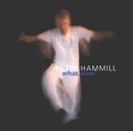

| Artist: | Peter Hammill |
| Title: | What, Now? |
| Label: | Fie FIE9123 |
| Length(s): | 49 minutes |
| Year(s) of release: | 2001 |
| Month of review: | [09/2001] |
| 1) | Here Come The Talkies | 9.41 |
| 2) | Far-flung (across The Sky) | 3.21 |
| 3) | The American Girl | 3.06 |
| 4) | Wendy & The Lost Boy | 3.26 |
| 5) | Lunatic In Knots | 8.04 |
| 6) | Edge Of The Road | 10.03 |
| 7) | Fed To The Wolves | 6.22 |
| 8) | Enough | 4.53 |
Almost ten minutes later we are at Far-flung (Across The Sky). This and the following two tracks are actually quite short. It opens mysteriously, world-music tinged with sparse instrumentation (and a vague one at that). Mostly guitar here, but very subdued. The vocals are soothing and mysterious with effects building up and subsiding during the track. A bit like a large cloud of mosquito's. The chorus is a bit more involved and nicely melodic.
The next one continues the tradition of Curtains and His Best Girl: music filled with a longing. Keyboards and saxophone figure mostly on this ballad. The vocals are a self duet, telling us a story with rather hastily sung verses.
The opening of Wendy & The Lost Boy is a bit melodramatic, a bit too romantic for me. The middle part when the music is fired up a bit I like better, a dark cello (or is violin?) sound here. The song sounds like a vocal track for piano and chamber orchestra.
Lunatic In Knots is back to the longer tracks. Melodically there are some Arabic (maybe Balkan) influences here. The music breathes the same somber atmospheres as earlier on did Far-Flung. At six minutes the pace comes into the song a bit more.
Edge Of The Road has an intimate feel and a somewhat whining, longing guitar sound, an effect which is strengthened by the saxophone. Although I like the melody the first is a bit mellow. At three minutes we move into a different part with clear keyboards. This lasts only shortly though and we return to the vocal part with the keyboards popping up at times. The middle part has percussive effect and a bit of meandering flute and sax. I am reminded here of Gabriel's Passion, the score for The Last Temptation Of Christ. Very moody. The final part is again a bit too melodramatic.
Fed To The Wolves opens with eerie keyboards and guitar effect. Loud chords on guitar, angry lyrics about child abuse by priests are recited, declamated. The song is not really a song, but a collection of effects and shards of guitar and violin.
Final track is Enough opening with reversed sounds. An eerie opening. Mostly vocals on this track and a rather vague performance, maybe a kind of vocal counterparts to the Dark Continent. One might be reminded of Tibetan chants here. The same eeriness.